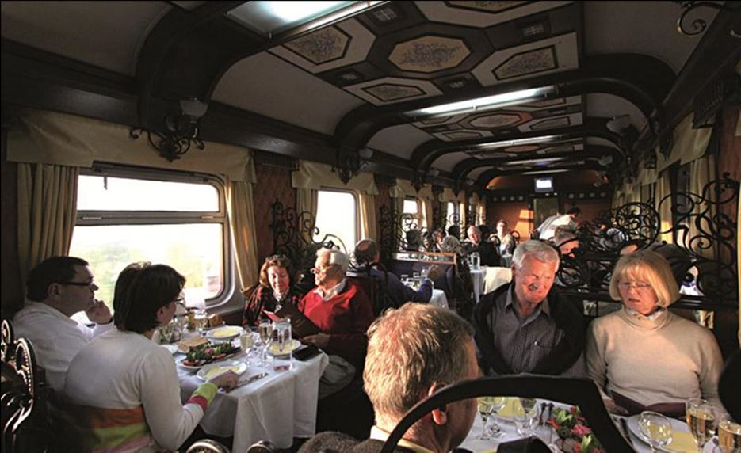
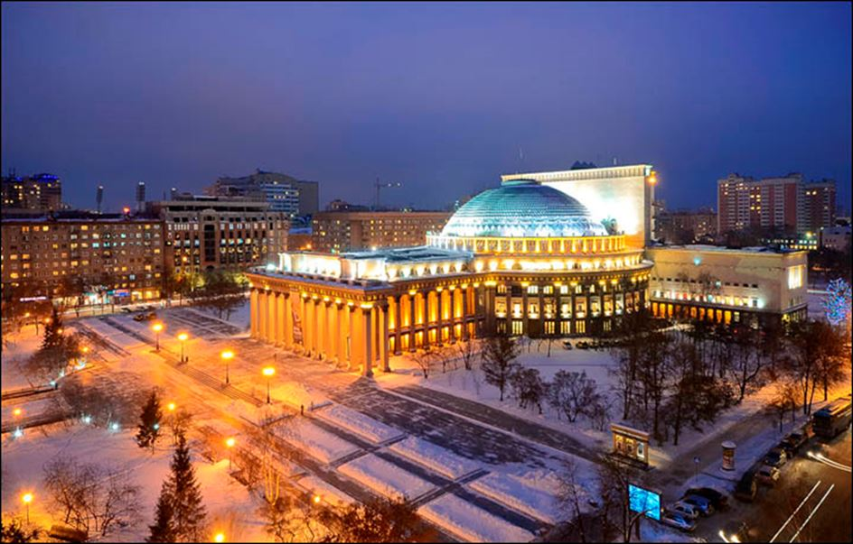
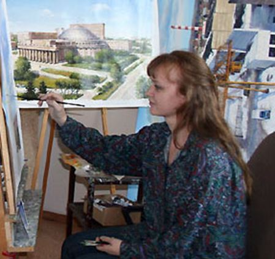
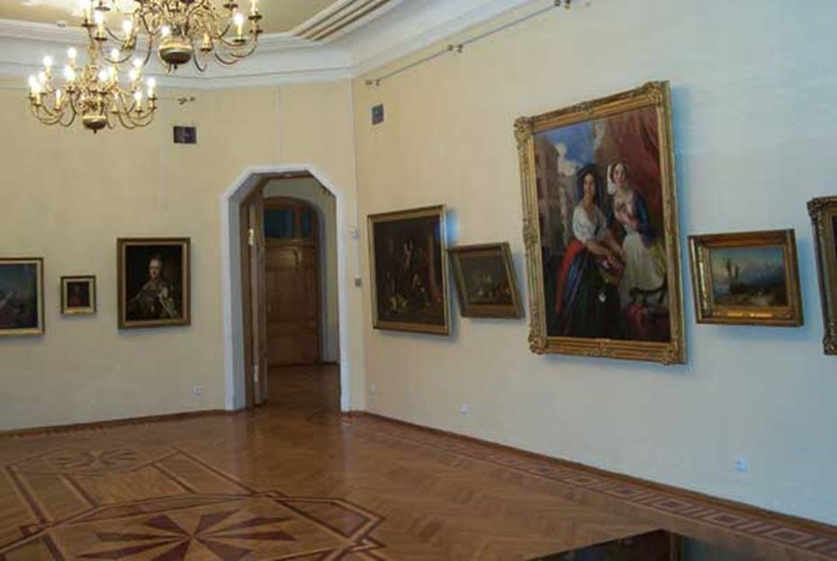
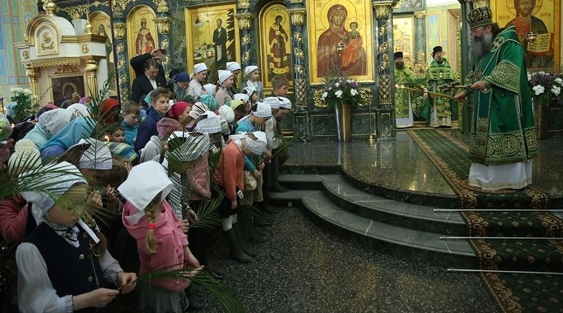
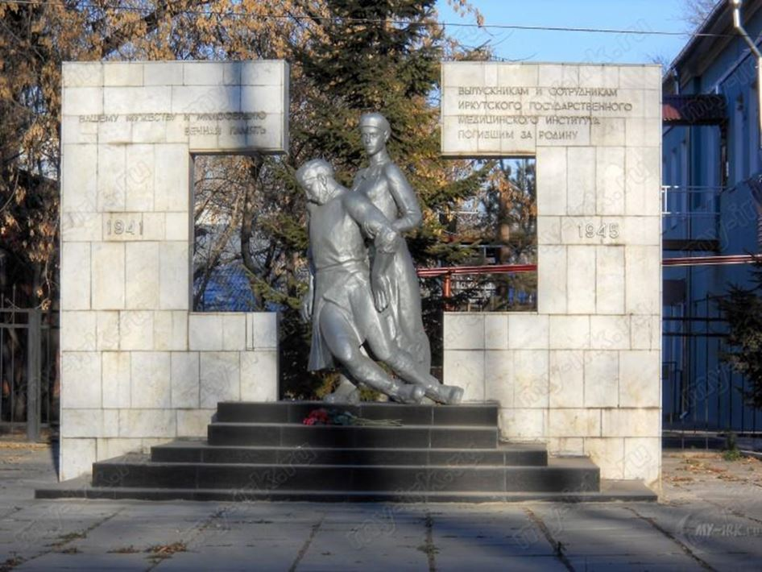
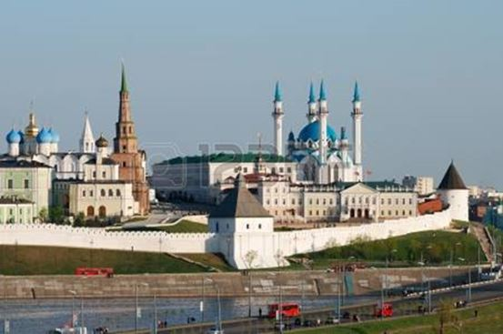
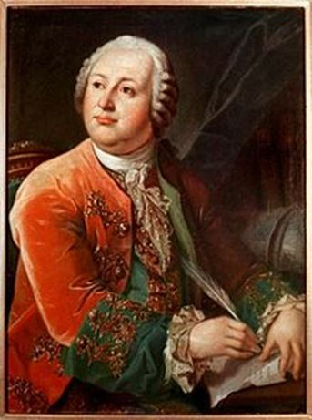
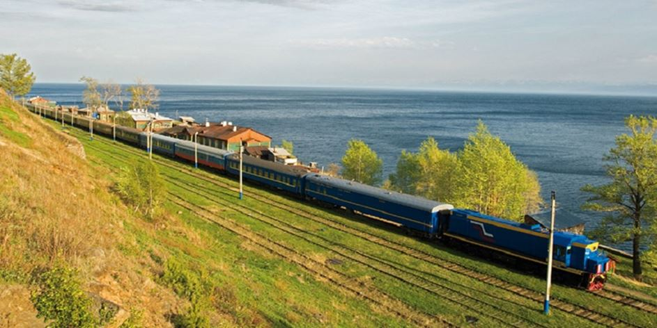

Je reviens de trois semaines de voyage dans « L’Or des Tsars », transsibérien mythique pour un voyage d’exception de Moscou à Pékin.
Je pensais ne retrouver que cette Russie éternelle que j’aime tant, les aigles royaux de Mongolie, les nomades mélancoliques d’Oulan Bator et tous les Ienisseï…Je les ai retrouvé, mais j’ai trouvé bien plus : j’ai retrouvé la France. La France éternelle, la France de la haute culture et de l’intelligence, la France dans sa langue et dans ses arts.
« Nous avons su pour Michelle Morgan. Quelle belle actrice disparaît. Nous avons pensé à vous ». Ludmilla a 50 ans. Guide locale mal payée, elle garde ce port de tête fier des femmes russes, bien décidées à rester droites malgré les temps difficiles. Je repense en la voyant aux femmes de Saint-Pétersbourg, durant les terribles années de la transition eltsinienne : rien à manger, mais on achète des fleurs sur la perspective Nevsky ! Comment dire à Ludmilla que Michelle Morgan n’a eu droit qu’au minimum syndical sur les chaînes de télévision françaises ! Ludmilla aime « Remorques » et « Les Orgueilleux ». Elle me demande des nouvelles de Danielle Darrieux !
Pour le voyageur moyen, il n’y a pas grand-chose à Novossibirsk, à part l’Ob qui déroule houleusement ses anneaux en pleine ville. Alors pour ces foutraques qui s’obstinent à vouloir visiter la Sibérie, sa taïga immense et ses grands fleuves intranquilles, Ludmilla a obtenu l’ouverture pour une heure de l’opéra de la ville : dans l’immense foyer désert, des vitrines où dorment des costumes de scène signés par de grands couturiers français et une grande femme blonde et mélancolique, la directrice, qui nous confie dans un souffle, dans un français parfait, un léger sourire aux lèvres : « Nous avons une relation spéciale avec la France ». J’ai un peu honte que la France n’ait pas de relation du tout avec Novossibirsk, et désormais si peu avec la Russie…
Ludmilla raconte : l’opéra a été construit pendant la Grande Guerre patriotique (la Seconde Guerre mondiale, à partir de 1941, dans la terminologie significative des Russes !) et fut inauguré le…11 mai 1945, par un grand concert où se rendirent 2000 habitants de la ville (la contenance de l’opéra). J’apprends qu’il y a ainsi des pays où, au lendemain d’une guerre mondiale, on accorde la priorité à la musique.
Dans d’autres pays, on cherche du jambon et des patates. Claude Autant-Lara devait adorer Novossibirsk !
Nous visitons Le centre historique. Partout, des groupes de jeunes lycéens sont assis en face des monuments les plus significatifs de leur ville : ils les dessinent, fusain, encre de chine, aquarelle…la même scène à Krasnoïarsk, à Irkoutsk, à Oulan Oude. La jeunesse russe admire son patrimoine et l’éprouve par le dessin. Des garçons et des filles jeunes, beaux, souriants…et fiers.
Longue halte dans la maison-musée du peintre Sourikov, un des grands « ambulants » de la fin du XIXème siècle. On nous offre un concert, on nous parle en français. « Le cœur de la France bat toujours à Novossibirsk3, nous confie la soprano. Je suis au bord des larmes…
Sourikov lisait Maeterlinck et Hugo. Ludmilla récite du Maurice Fombeure et du Marie Noëlle : qui lit encore ces deux-là au pays de Marc Lévy ? La littérature française classique fait toujours battre le cœur des Russes, et cette langue française qu’ils aiment tant, liée pour eux à tout l’héritage des Lumières !
Ekaterinbourg : la mort de Nicolas II. Bouleversante église du Saint-Sauveur-sur-le-sang-versé, construite à l’emplacement de la maison Ipatiev où, dans la nuit du 16 juillet 1918, Nicolas II et sa famille furent massacrés par les bolcheviks. L’icône Lénine ne pouvait coexister avec l’icône tsariste ! On massacra. On massacra aussi les enfants, comme en 93-95 en France, comme dans les années 1917-1953 en URSS, comme dans l’Allemagne nazie : il faut génocider la « vermine » pour qu’il n’en reste rien, dit Lénine dans un texte célèbre de 1918. Devant l’église, une grande sculpture montre la famille impériale descendant l’escalier de la cave lors de cette nuit funeste. Le tsar porte le tsarévitch, malade, dans ses bras. Nicolas II mourra sur le coup. Il faudra achever l’enfant de deux balles dans la tête et les princesses à la baïonnette, les balles, ricochant sur leurs bijoux, s’avérant insuffisantes…Devant l’église, de grands posters de la famille Romanov. Je repense à cette terrible phrase de François Furet : « Chez les fascistes, il y a les ennemis de race. Chez les communistes, il y a les ennemis de classe ».
Lena remarque notre émotion et la respecte. Elle nous explique toutefois que la ville ne doit pas être résumée à cet épisode tragique auquel son nom demeure pourtant lié. Aussi s’efforce-t-elle de nous faire voir le patrimoine architectural de la ville, de nous vanter les mérites de l’université et des différentes académies. Comme la plupart des Russes, elle fait désormais face aux fantômes du communisme, au goulag, aux grands massacres de masse qui, nous le constatons en visitant un peu partout monuments commémoratifs et stèles portant le nom des milliers de victimes des purges de 1936-1938 – une première fosse commune de 18000cadavres dans la taïga au Nord de la ville – mais elle refuse de céder à la repentance : il faut rendre honneur et mémoire aux victimes, mais l’Histoire est tragique et Staline fut aussi « un grand patriote » ! Lena fait face à toute l’histoire, dans sa complexité. Rien à voir avec les soumissions et les flagellations françaises. Jamais un Russe n’aurait pu diriger la Russie en niant tout ou partie de son histoire et de sa culture. On ne s’assoit pas dans le siège de Pierre le Grand ou de Catherine de Russie quand on nie l’existence de la culture russe ou qu’on traire l’empire de criminel. En France en revanche, on peut s’assoir dans le fauteuil de de Gaulle en accusant son pays de « crime contre l’humanité » et en niant l’existence d’une culture française. Quand je rapporte cela à Lena, elle sourit. Simplement. Grande professionnelle : on ne commente pas la politique d’un autre pays ! Il y a chez les Russes une sorte de fatalisme transhistorique tragique : on prend la Russie en entier où on ne la prend pas !
Il y a surtout, intact, puissant, venu du fond des âges, des cœurs, des reins, un patriotisme sans faille.
À Irkoutsk, devant le monument aux morts, couvert de fleurs, la relève de la garde d’honneur. La Grade d’honneur ? Nous la voyons arriver de loin, dix garçons et filles en uniformes de pionniers, pantalons et jupes kaki, chemises et chemisiers gris, calots noirs. Ils avancent au pas cadencé, le visage haut levé vers le ciel comme le veut la tradition. Jeunes, un peu empruntés encore dans leurs gestes, mais à l’évidence très fiers. Nadia nous explique que cet honneur échoit, chaque année, aux meilleurs élèves de la ville…
En France, on chasse les pokémons à Douaumont et on piétine les tombes à Verdun. En France, on n’aime pas beaucoup les bons élèves, « tous bourgeois » c’est bien connu. Qui est resté marxiste ?
Veiller sur la mémoire des morts, s’inscrire dans un héritage, une filiation, un exemple : les jeunes russes, après leurs parents soviétiques, reprennent le flambeau, non du « mémoriel », cette amnésie collective, cette muséification d’une Histoire à laquelle on ne croit plus : de retour en France, après le second tour des législatives, j’entends la déclaration d’une jeune candidate « En Marche » : pour elle, l’Histoire française « a fait son temps ». Elle aura sans doute été élue : elle est la voix de son maître.
Les communautés russes sont soudées par la loi d’airain de la souveraineté étatique : vous êtes ce que vous voulez, orthodoxes (de préférence bien sûr parce-que depuis Vladimir au IXème siècle, c’est le rite d’origine gréco-byzantine qui fonde l’identité russe), catholique, juif (après des décennies d’un antisémitisme qui n’avait rien à envier à celui des pangermanistes durs), musulman, mais vous devez obéir sans fléchir à l’État et cantonner vos croyances à la sphère publique.
« Il les tient » me confie Alena, notre guide du transsibérien, évoquant la ligne de conduite implacable de Poutine à l’égard des Musulmans de Russie. Même à Kazan, au cœur du Tatarstan, l’Islam, historiquement et socialement important doit allégeance aux pouvoirs, local, national, fédéral. Dans le magnifique Kremlin de Kazan, deux édifices cultuels à 500 m l’un de l’autre : une mosquée récente et la vénérable église de la Transfiguration.
On se rencontre, on se parle, on coexiste…mais on ne se mélange pas ! On sait que la juxtaposition des cultures est possible, mais que tout métissage passe par l’effondrement de la plus faible des communautés. On sait aussi que ce « métissage » aboutirait à une « baisse de niveau » des enjeux culturels. Pas de femmes voilées dans les rues, pas de privatisation de l’espace public par une communauté. Comme en Ouzbékistan, que je parcourais il y a trois ans, les mosquées sont d’abord des musées. Elles ne sont ouvertes au culte que deux heures par jour. Nulle tension de ce fait dans les rues de Kazan, nulle marque vestimentaire fonctionnant comme marqueur politico-religieux comme …à Saint-Denis en France, où la basilique de nos rois se trouve désormais enclavée dans un paysage, une atmosphère et des formes vestimentaires, culinaires, commerciales islamiques. Une remise en cause d l’histoire globale, un négationnisme culturel inconcevable en Russie.
Complexe alchimie. La fédération de Russie réunit des dizaines de communautés et de langues différentes. Pour coexister, il faut néanmoins affirmer la domination unitaire d’une culture et surtout d’une langue. La patrie des Russes, c’est leur langue. On continue là-bas à fonctionner à partir de l’héritage du grammairien Lomonossov – l’université de Moscou porte son nom, c’est un signe majeur – un peu comme si nous nous inscrivions encore dans celui de Péguy, ou de Renan. Alors bien sûr, nos guides restent persuadées qu’en apprenant avec tant de soin le Français, elles s’imprègnent d’une culture et d’une civilisation. Comment leur faire comprendre qu’en France, notre jeunesse, dans sa majorité, ne parle plus que le volapük mondialisé, mélange de sous-français et de dialectes et expressions terriblement subsahariennes !
Comment le faire comprendre – et faut-il le faire comprendre – à Anastasia (20 ans à tout casser) qui anime des conversations de Français à la bibliothèque de Krasnoïarsk et cherche désespérément à attirer une « Alliance française » dans sa ville ?
J’aurais passé ce voyage plus ou moins toujours au bord des larmes : pour nos guides, la langue française, la France, demeurent la langue et le pays de la liberté, de la culture, de l’art de vivre, de l’art tout court. Impossible ici d’imaginer un plug anal vert sur la Place Rouge !
Le plus grand bonheur pour nos interlocutrices : quand nous manifestons, à notre tour, notre connaissance de la littérature et des arts russes et les remercions, nous aussi, d’une certaine façon, pour Mandelstam, pour Essenine, pour Lermontov ou pour ce Trifonov qui, à Moscou, consacra un livre entier à « La maison sur le quai », immeuble-ville constructiviste qui abrita, entre 1920 et 1940, les « hommes d’appareils », avant que les purges ne les entraîne vers la Loubianka, antichambre des camps soviétiques. En Russie, la littérature, mythifiée, sert toujours de passeport vers les autres peuples. Ici, les frontière sont toujours longues et difficiles à franchir, mais la poésie ouvre les portes de l’interculturel ! Le contraire de notre UE dont les frontières, « ouvertes », ne laissent passer que les boutiquiers et les terroristes.
Quatre heures à la frontière russo-mongole. Confinement dans les compartiments, rideaux fermés, pas de photos ! Contrôle méticuleux des passeports. Silence. Tension. Délicieuse tension. Ici, on éprouve encore le Passage entre deux mondes. Méditation. Préparation à la différence, sans laquelle – on ne le comprend plus en Occident – il n’y a plus de différence. Le train repart. Nous sommes en Chine du Nord. Un autre monde. Mais c’est une autre histoire.
Aragon écrivait en 1945 : « Mon parti m’a rendu les couleurs de la France », allusion au rôle des communistes dans la résistance.
Je dirais pour ma part qu’en ce mois de juin 2017, la Russie m’a rendu les couleurs de la France.
Partager cette page